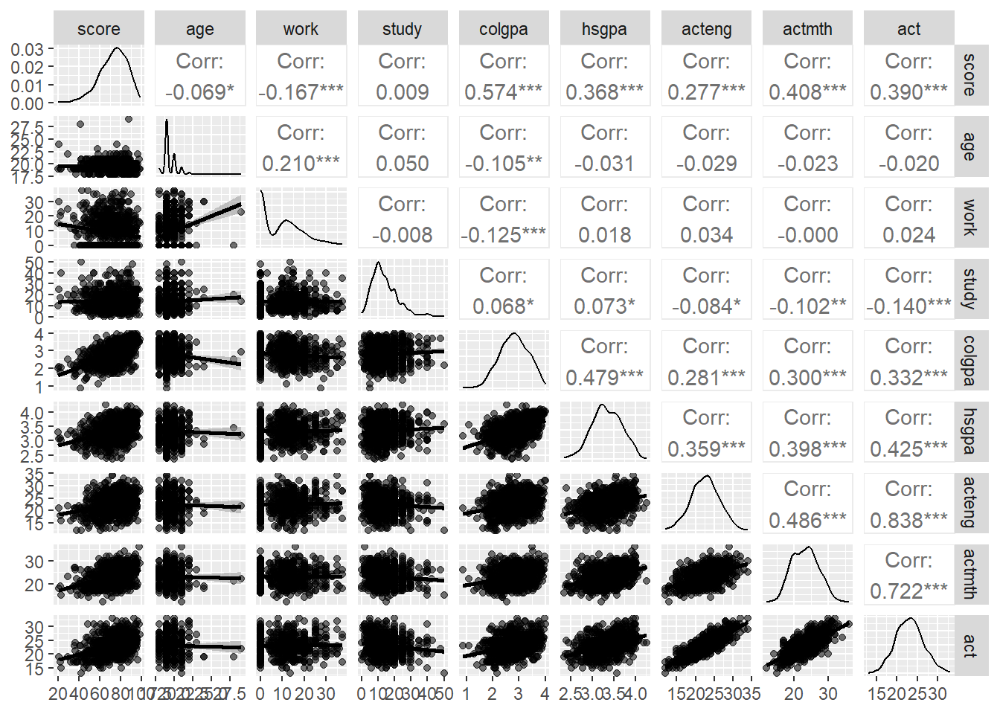
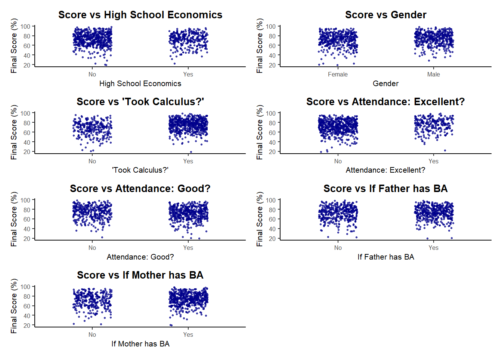
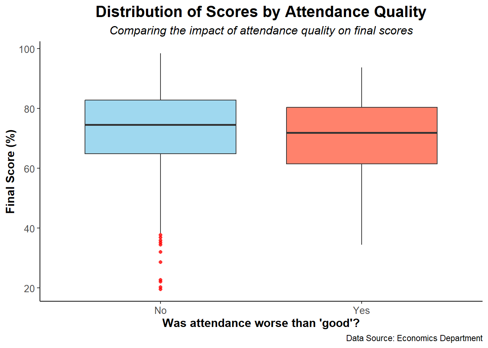
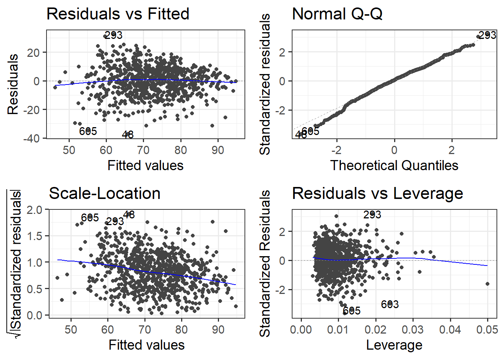
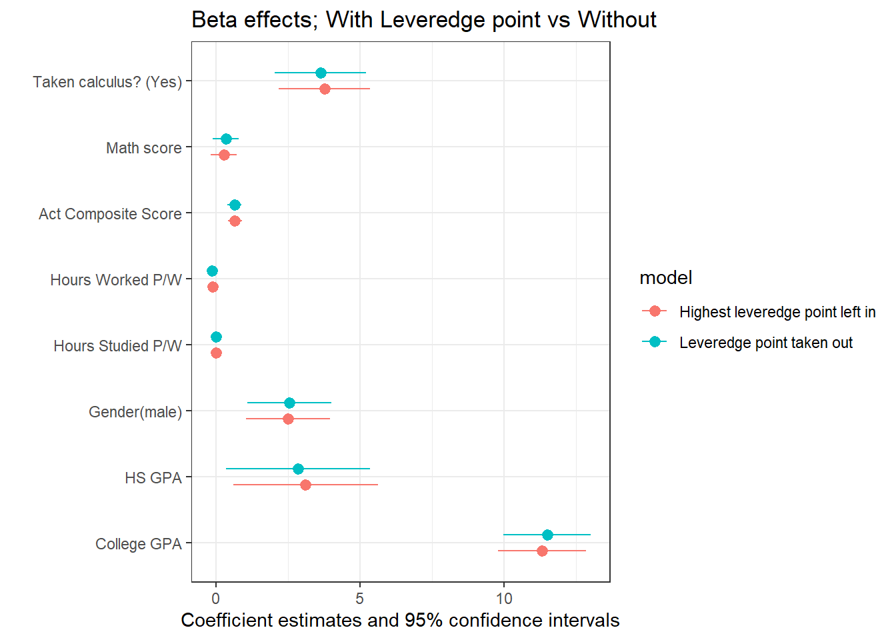

| Unique | Missing Pct. | Mean | SD | Min | Median | Max | Histogram | |
|---|---|---|---|---|---|---|---|---|
| age | 9 | 0 | 19.4 | 0.9 | 18.0 | 19.0 | 29.0 | |
| work | 44 | 0 | 8.6 | 9.2 | 0.0 | 8.0 | 37.5 |  |
| study | 52 | 0 | 13.9 | 7.8 | 0.0 | 12.0 | 50.0 |  |
| colgpa | 612 | 0 | 2.8 | 0.5 | 0.9 | 2.8 | 4.0 |  |
| hsgpa | 531 | 0 | 3.3 | 0.3 | 2.4 | 3.3 | 4.3 |  |
| acteng | 24 | 5 | 22.6 | 3.8 | 12.0 | 23.0 | 34.0 |  |
| actmth | 24 | 5 | 23.2 | 3.8 | 12.0 | 23.0 | 36.0 |  |
| act | 21 | 5 | 23.1 | 3.3 | 13.0 | 23.0 | 33.0 |  |
| mathscr | 11 | 0 | 7.9 | 1.7 | 0.0 | 8.0 | 10.0 |  |
| score | 149 | 0 | 72.6 | 13.4 | 19.5 | 74.2 | 98.4 |  |
The Determinants of Economics Students’ Final Score
1. Introduction
The intention of this journal entry is to find the determinants of Students’ final exam scores within the field of economics.
2. Variable insight
2.1 Variables and R functions
The data was attained from an anonymous college in the United States. There are 856 observations total, with 17 variables. The variables collected are described in the list of variables. The column ‘Variable code’ describes the code which was assigned to each variable, which will correspond with each beta value in our Table 3. The variable description clarifies the detail of the variable, and the variable type briefly describes the role of the variable in the study. Our variable of interest, i.e. the dependent variable of the study is ‘score’. Below, Table 1 lists the mean, standard deviation (SD), the minimum value, the median value, and the max value. It also has a histogram assigned to each variable which shows the distribution of the sample relative to each variable. In Table 1, the variables econhs, male, calculus, attexc, attgood, fathcoll, mothcoll were all left out as because they are binary variables, the information displayed would be less insightful. Table 2 is a list of correlation coefficients with the intention of challenging intuition before regressing with the data. Figure 1 is a collection a graphs plotting each binary variable against the final score of economics students. Finally, Figure 2 graphs ‘attbad’, a newly created variable (which is explained below), against the final score.
| Variable code | Variable description | Variable type |
|---|---|---|
| age | Age in years | Independent, Continuous |
| work | Hours worked per week | Independent, Continuous |
| study | Hours studying per week | Independent, Continuous |
| econhs | If the student did economics in high school | Independent, Factor; ‘Yes’ indicates the student did economics in high school |
| colgpa | Student’s college GPA at the beginning of the semester | Independent, Ordinal; 0-4 |
| hsgpa | Student’s high school GPA | Independent, Ordinal; 0-4 |
| acteng | Student’s ACT English score | Independent, Ordinal; 1-36 |
| actmth | ACT math score | Independent, Ordinal; 1-36 |
| act | Student’s composite ACT score | Independent, Ordinal; 1-36 |
| mathscr | Student’s score on a math quiz | Independent, Ordinal; 0-10 |
| male | Gender of the student | Independent, Factor; ‘male’ indicates the participant is male, ‘Female’ indicates participant is female |
| calculus | If the student had taken a calculus course | Independent, Factor; ‘Yes’ indicates the participant took a calculus course |
| attexc | If the student’s attendance was excellent | Independent, Factor; ‘Yes’ indicates the participants attendance was excellent |
| attgood | If the student’s past attendance was good | Independent, Factor; ‘Yes’ indicates the participants attendance was good |
| fathcoll | If the student’s father had a bachelors degree | Independent, Factor; ‘Yes’ indicates that the participants father had a bachelors degree |
| mothcoll | If student’s mother had a bachelors degree | Independent, Factor; ‘Yes’ indicates that the participants mother had a bachelors degree |
| score | Course score | Dependent, Ordinal; 0-100, in percent. |
| attbad | Student’s attendance was less than ‘good’ | Independent, Factor; Yes indicates attendance was neither ‘good’ nor ‘excellent’ |
The R function ‘dplyr’ was used in our study to tidy our data. The ‘mutate’ function was used to convert binary variables into factor variables. The purpose of this is to improve interpretation by preventing R from treating it as a continuous numeric variable, instead treating it as a categorical variable where one level (e.g. ‘Yes’) becomes the reference level, and the coefficient represents the effect of the other level, relative to the reference. Dplyr was also used to arrange the data so that ‘score’, our variable of interest, appears first. Again, it was used to filter our the binary variables from appearing on our summary table. A new variable called ‘attbad’, using the mutate function, was created, which indicates the student’s attendance was neither good nor excellent. This was done by assigning a ‘yes’ value if both ‘attexc’ and ‘attgood’ had a ‘No’ value. The purpose of this variable was to reveal how students with worse attendance than ‘good’ did on their final scores. Dplyr was also used to remove any rows with ‘NA’ values in order to keep our data consistent and usable with R functions.
2.2 Tables and graphs
The summary table provides an overview of the key statistics for the variables in the dataset. The ages of participants range from 18 to 29 years, with a mean age of 19.4 and a relatively small standard deviation (SD) of 0.9, indicating most participants are close to the average age. Hours worked per week vary significantly, ranging from 0 to 37.5 hours, with a mean of 8.6 hours and a high SD of 9.2, suggesting substantial variation in work hours. Study hours per week range from 0 to 50, with a mean of 13.9 and an SD of 7.8. The wide range and higher SD indicate diverse study habits among participants. College GPAs range from 0.9 to 4.0, with a mean of 2.8 and a low SD of 0.5, showing that most GPAs cluster near the mean. High school GPAs range from 2.4 to 4.3, with a mean of 3.3 and an SD of 0.3, indicating less variability than college GPA. ACT English scores range from 12 to 34, with a mean of 22.6 and an SD of 3.8, reflecting moderate variability in English performance. ACT Math scores range from 12 to 36, with a mean of 23.2 and an SD of 3.8, suggesting a similar variability as ACT English scores. Composite ACT scores range from 13 to 33, with a mean of 23.1 and an SD of 3.3, indicating consistent performance across participants. Math quiz scores range from 0 to 10, with a mean of 7.9 and an SD of 1.7, showing relatively high performance on the math quiz. Final course scores range widely, from 19.5 to 98.4, with a mean of 72.6 and an SD of 13.4, indicating significant variability in overall course performance. The histograms visually summarize the distribution of each variable, showing that variables like age, colgpa, and hsgpa are tightly clustered, while others like work and study exhibit a wider spread.

The table displays the correlation coefficients and also shows scatter plots (lower triangle) and density plots (diagonal) for each pair of variables. The scatter plots illustrate how the variables relate to one another visually: for instance, we can see an upward “cloud” of points between final exam score and college GPA, consistent with their relatively strong positive correlation of 0.57. A similar upward trend is evident between final exam score and ACT math (r = 0.41) and between final exam score and ACT composite (r = 0.39). Meanwhile, variables like age display a weaker (and slightly negative) relationship with the final exam score, reflected by a fairly diffuse cloud of points and a small correlation (–0.07).
The density plots on the diagonal show how each variable is distributed overall. For example, final exam scores appear roughly unimodal (slightly skewed), while college GPA, ACT math, and ACT composite each cluster around a particular central value with varying spreads. In short, these visual patterns reinforce our numeric correlations: higher GPAs and stronger ACT scores tend to line up with higher final exam scores in economics. The regression analysis below will test whether these relationships hold once other factors are accounted for.

The above graphs were created seeking to gain clarity on the relationship between each of the variables and final economics exam scores. Across all plots, there appears to be no substantial difference in the distribution of scores between the ‘no’ and ‘yes’ categories. All show similar spreads and central tendencies. This suggests minimal or no strong relationship with scores. These graphs imply that the variables investigated may not be strong predictors of student performance. Further statistical testing via regression analysis is required to verify these claims.

The above graph visualises the relationship between the binary variable that was created, ‘attbad’ and the dependent variable ‘score’. ‘No’ indicates students whose attendance was at least ‘good’ while ‘yes’ indicates the student’s attendance was at least worse than ‘good’. The Y-axis represents our ‘score’ variable. The median, which is the horizontal line in the box, is slightly higher for students with ‘bad’ attendance. This suggests that, on average, students with bad attendance have a slightly higher score. It should be noted however, that the difference does not appear to be dramatic. The interquartile range, i.e. the height of the box, is slightly narrower for students with bad attendance. This suggests there is more variability in students with good or excellent attendance, however, this could be due to the sample size being smaller in those with ‘bad’ attendance. For students with ‘good’ or better attendance, there are several outliers below the 40% mark, meaning some students who had good or better attendance still performed poorly on their final economics exams. This plot challenges the intuitive assumption that bad attendance automatically lead to worse scores on exams. As we can see, the difference is slight. ‘attbad’ will be included in a regression to investigate the implications of this plot.
3. Regressions and analysis
3.1 Regression Methods
In this section our chosen regression method is ordinary least squares (OLS). This method seeks to find the effect of the independent variable, denoted as ‘beta’, by minimizing the sum of squared residuals.
In matrix form, the OLS estimate is:
\[ \hat{\boldsymbol{\beta}} = (\mathbf{X}^\top \mathbf{X})^{-1} \mathbf{X}^\top \mathbf{y} \]
where:
\( \mathbf{X} \) is the design matrix of predictors,
\( \mathbf{y} \) is the vector of outcomes,
\( \hat{\boldsymbol{\beta}} \) is the vector of estimated coefficients.
An important assumption of OLS to note:
$$ \text{Cov}(x_j, \mu) = 0 \quad \forall \, j \in \{1, 2, \dots, k\} $$
or equivalently:
$$ \mathbb{E}[\mu \mid X] = 0 $$
where:
\( x_j \) represents the \( j \)-th predictor,
\( \mu \) is the error term,
\( \mathbb{E}[\mu \mid X] = 0 \) means the error term has a mean of zero given the predictors.
This means our Beta term and dependent variable must not both be correlated with our error term, or our correlation coefficients will be ‘biased’ meaning, on average, our coefficients will be incorrect. By satisfying this assumption, we ensure that our betas show the accurate effect on the dependent variable on average.
The predicted value of \( Y \), denoted as \( \hat{y} \), is calculated as:
$$ \hat{y} = + \hat{\beta}_0 + \hat{\beta}_1 x_1 + \hat{\beta}_2 x_2 + \dots + \hat{\beta}_k x_k +\mu$$
\( \hat{\mathbf{y}} \): Vector of predicted values,
\( \mathbf{X} \): Design matrix of predictors,
\( \hat{\boldsymbol{\beta}} \): Vector of estimated regression coefficients.
\( \boldsymbol{\mu} \): Vector of error terms.
Using this method, we will be able to speculate the associated effect of beta on our dependent variable on average.
3.2 Regressions and Interpretations
| College GPA | Add HS GPA | Add Gender | Add Hours studied | Add hours worked | Add ACT Score | Add Math Score | Add If Calculus Taken | |
|---|---|---|---|---|---|---|---|---|
| + p < 0.1, * p < 0.05, ** p < 0.01, *** p < 0.001 | ||||||||
| Standard Errors are in parentheses. Logs not applicable to our data. Gender coefficient is true when gender = male. Calculus variable is true if student has taken calculus. | ||||||||
| College GPA | 14.323*** | 12.667*** | 12.713*** | 12.734*** | 12.398*** | 11.556*** | 11.489*** | 11.327*** |
| (0.705) | (0.799) | (0.785) | (0.786) | (0.791) | (0.786) | (0.784) | (0.775) | |
| HS GPA | 5.344*** | 6.138*** | 6.173*** | 6.416*** | 3.754** | 3.365** | 3.108* | |
| (1.254) | (1.242) | (1.243) | (1.240) | (1.289) | (1.294) | (1.279) | ||
| Gender(male) | 4.042*** | 3.943*** | 3.620*** | 3.127*** | 2.927*** | 2.495*** | ||
| (0.747) | (0.755) | (0.760) | (0.748) | (0.750) | (0.746) | |||
| Hours Studied P/W | -0.042 | -0.046 | 0.006 | 0.004 | 0.003 | |||
| (0.048) | (0.048) | (0.048) | (0.047) | (0.047) | ||||
| Hours Worked P/W | -0.118** | -0.132*** | -0.131** | -0.131*** | ||||
| (0.041) | (0.040) | (0.040) | (0.039) | |||||
| Act Composite Score | 0.753*** | 0.675*** | 0.653*** | |||||
| (0.124) | (0.127) | (0.126) | ||||||
| Math score | 0.565* | 0.268 | ||||||
| (0.225) | (0.231) | |||||||
| Taken calculus? (Yes) | 3.763*** | |||||||
| (0.813) | ||||||||
| Num.Obs. | 814 | 814 | 814 | 814 | 814 | 814 | 814 | 814 |
| R2 | 0.337 | 0.351 | 0.374 | 0.375 | 0.381 | 0.408 | 0.413 | 0.428 |
| R2 Adj. | 0.336 | 0.350 | 0.372 | 0.372 | 0.377 | 0.404 | 0.408 | 0.423 |
College GPA has a consistently strong positive association with final scores across all of the models. A one unit increase in college GPA is associated with an increase of 11.3 points, average, in exam scores when controlling for other variables. This coefficient is significant at the 99% level. This indicates that college academic performance is a critical determinant of success in economics exams.
High school GPA also displays a positive relationship with final exam score. A one unit increase in High School GPA is associated with an increase of 5.3 points, on average, in exam scores when only College GPA is included in the regression. Interestingly, adding gender, hours studied and hours worked to this regression increases this coefficient to 6.4 points on average, indicating that these variables are negatively correlated with each other. Then, adding ACT score, math score and if the student took calculus brings the coefficient down to 3.1 points on average, indicating that these variables are positively correlated with each other. Although, this is only significant at the 90% level.
The variable ‘Gender’ indicates that being male is associated with an increase in final score of 2.5 points, on average, compared to females when all other variables are controlled for. This is statistically significant at the 99% confidence level.
Hours studied per week show no statistically significant relationship with final scores, as the coefficient is near zero across all models.
Hours worked per week have a significant negative relationship with exam scores. A one-hour increase in work is associated with a decrease in exam scores by .13 points on average when controlling for all other variables. This suggests that work commitments hinder academic performance.
Math score shows a weak coefficient; a one unit increase in math score is associated with a an increase in final exam score of .57 on average when controlling for all variables except the calculus variable. In this regression, it is significant at the 90% level. However, when controlling for if the student has taken calculus, this associated effect becomes weaker and loses statistical significance.
Students who took calculus are associated with an increased score of 3.76 points on average than those who did not, with a significance level at 99%.
The R squared and adjusted R squares values increase as more variables are added, suggesting that the model improved in fit and that no unnecessary variables were added. The final value is .423, meaning the model explains 42.3% of the variance in final exam scores.

Figure 3 summarises the coefficients relative to one another. It also displays their 95% confidence intervals, allowing us to compare how the inclusion of different variables affects the estimated effects of predictors on economic student’s final exam scores.
Our main takeaway from these regressions are; Academic preparations such as college GPA, HS GPA, ACT composite score and calculus high indicators of exam performance. External factors like work commitments are associated with negative impacts on performance. Non-significant variables like hours studied per week warrant further investigation to understand their role in this data set.
3.3 Regression Diagnostics
Figure 4 below assess the assumptions of a linear regression model. Each plot assesses the model’s performance and whether key assumptions are violated.

The purpose of the residuals vs fitted plot (top left) is to check for non-linearity and constant variance, or homoskedasticity. The residuals are scattered around zero, however there is a slight curved pattern in the residuals indicating possible non-linearity in the relationship between predictors and the outcome. The spread of residuals is quite even, suggesting no strong evidence of heteroskedasticity (non constant variance).
The purpose of the normal q-q plot (top right) is to check whether the residuals follow a normal distribution. Most points lie close to the diagonal line, suggesting that residuals are normal. There are some deviations at the tails, particularly observation 293, which may indicate potential outliers.
The purpose of the scale-location plot is to check for homoskedasticity. The trend line is relatively and the spread of the points appears fairly consistent across fitted values. However, the downward slope of the trend line suggests a slight decrease in variance as fitted values increase, indicating mild heteroskedasticity.
The residuals vs Leverage plot (bottom left) identifies influential points. Most point have low leverage, as indicated by their clustering near the left side of the plot. Observation 293 has higher leverage and could potentially be an influential point. Its standardised residual does not appear extreme, however, so its influence may be limited.
From our findings we can conclude that the linearity assumption may be slightly violated due to the curve in the residuals vs fitted plot. There also may be mild heterskedasticity, but no severe violations. This means our coefficients may be slightly wrong.
Observation 293 will be removed from the model to see its affect on the coefficients.
| Highest leveredge point left in | Leveredge point taken out | |
|---|---|---|
| + p < 0.1, * p < 0.05, ** p < 0.01, *** p < 0.001 | ||
| Standard Errors are in parentheses. Logs not applicable to our data. Gender coefficient is true when gender = male. Calculus variable is true if student has taken calculus. | ||
| College GPA | 11.327*** | 11.505*** |
| (0.775) | (0.773) | |
| HS GPA | 3.108* | 2.849* |
| (1.279) | (1.276) | |
| Gender(male) | 2.495*** | 2.550*** |
| (0.746) | (0.743) | |
| Hours Studied P/W | 0.003 | 0.002 |
| (0.047) | (0.047) | |
| Hours Worked P/W | -0.131*** | -0.133*** |
| (0.039) | (0.039) | |
| Act Composite Score | 0.653*** | 0.639*** |
| (0.126) | (0.125) | |
| Math score | 0.268 | 0.340 |
| (0.231) | (0.231) | |
| Taken calculus? (Yes) | 3.763*** | 3.630*** |
| (0.813) | (0.810) | |
| Num.Obs. | 814 | 813 |
| R2 | 0.428 | 0.433 |
| R2 Adj. | 0.423 | 0.427 |

From Table 4 we can see that the variables has slight change when taking out observation 293. However, as we can see from Figure 5 the difference is mild and does not effect the overall takeaway of the regression.